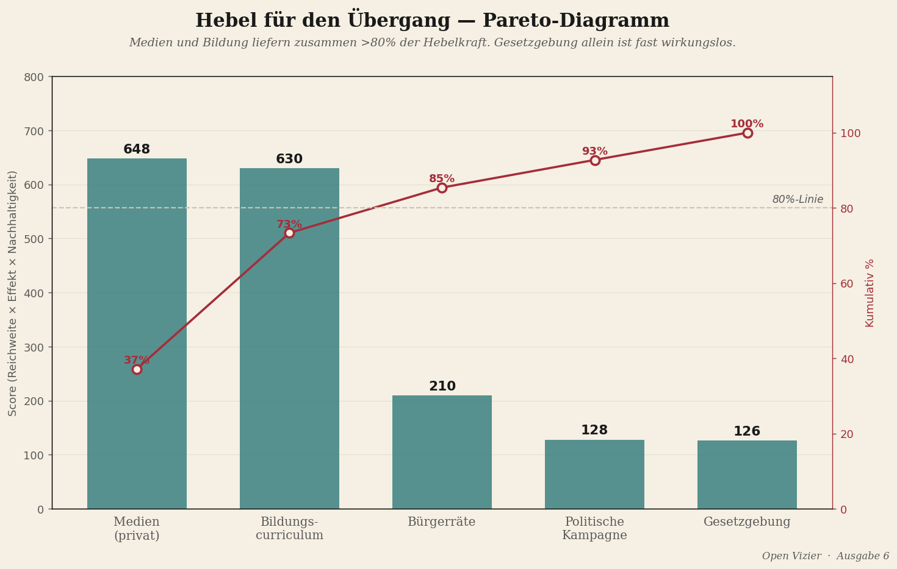

In der Konstruktionslehre kennt man Ordnungen des Widerstands. Eine Belastung erster Ordnung verursacht eine elastische Verformung: Die Konstruktion federt zurück, sobald die Belastung wegfällt. Eine Belastung zweiter Ordnung verursacht eine plastische Verformung: Es bleibt eine dauerhafte Abweichung, aber die Konstruktion steht noch. Eine Belastung dritter Ordnung nähert sich der Versagensgrenze: Knicken, Bruch, Einsturz. Im Stahlbau wählt man eine Konstruktion so, dass die Arbeitslast stets weit unter der Elastizitätsgrenze bleibt, mit einem Sicherheitsfaktor von anderthalb bis zwei.

Die heutige niederländische Demokratie befindet sich tief in der zweiten Ordnung. Permanente plastische Verformung — wachsende Bürokratie, versandende Gesetzgebung, sinkendes Vertrauen — aber noch nicht zusammengebrochen. Eine grobe Schätzung des Sicherheitsfaktors: etwa eins Komma eins. Nahezu keine Marge.
Das Konstruktionsdiagramm
Medien sind der Dehnungsmessstreifen
Eine Konstruktion ohne Dehnungsmessstreifen misst man nicht; man weiß erst, dass sie versagt hat, wenn sie am Boden liegt. Die heutigen niederländischen Medien messen ausschließlich Ereignisse erster Ordnung — Skandalamplitude, Umfrageergebnisse. Keine Hysterese, keine Ermüdung, keine Knickreserve. Was fehlt, ist eine strukturelle Aufsicht über den Träger selbst.
Ein Nova Democratia-Medium tut das, was ein Ingenieur bei einer Brücke tut: kontinuierlich messen statt gelegentlich reagieren; die Belastungshistorie protokollieren; Reservekapazitäten veröffentlichen. Keine kritische Journalistik mehr, sondern strukturelle Integritätsmessung. Das ist ein operativ anderes Fachgebiet.
Hebel für die Transition — ein Pareto
Medien und Bildung erzielen zusammen mehr als achtzig Prozent der gesamten Hebelkraft. Medien sechshundertachtundvierzig, Bildung sechshundertdreißig. Gesetzgebung allein erzielt einhundertsechsundzwanzig — ohne den Medienhebel bleibt jedes Gesetz symbolisch. Politische Kampagnen erzielen einhundertachtundzwanzig: schnell, aber zu kurz, um das Denken zu verändern. Bürgerbeiräte zweihundertzehn: starke Wirkung, aber zu begrenzte Reichweite.
Medien schneiden in einem entscheidenden Punkt besser ab als Bildung: Geschwindigkeit. Bildung wirkt über eine Schulgeneration hinweg, zehn Jahre oder mehr. Medien über einen Nachrichtentext, zehn Tage. Für eine Transition, die innerhalb einer politischen Generation beginnen muss, sind Medien also nicht nur die Basis — sie sind der einzige Hebel mit ausreichender Punktzahl und ausreichender Geschwindigkeit.
Gesetzgebung ohne Medien ist symbolisch. Bildung ohne Medien wirkt zu langsam. Medien ohne die anderen beiden sind leer. Aber ohne Medien funktioniert nichts.
Phase minus eins — kognitive Infrastruktur
Für alle zuvor genannten Phasen muss eine Phase minus eins ablaufen: Das Publikum lernt, strukturelle Indikatoren zu lesen. Nicht durch Bildung, sondern durch konsistente Wiederholung in den eigenen Medien — Het Open Vizier, Nova Democratia und verwandte private Kanäle. Drei Indikatoren stehen im Mittelpunkt: Hysterese (immer teurere Koalitionsbildungen, immer längere Formationen), Ermüdungsbruch (Vertrauensverlust, den kein einzelner Vorfall erklärt) und Knickgrenze (Legitimitätskollaps ohne vorangegangene Krise).
Erst wenn dreißig Prozent der Befragten in öffentlichen Umfragen spontan strukturelle Begriffe verwenden, beginnt Phase null. Nicht früher. Es ist die selbst auferlegte Schwelle, die verhindert, dass der gesamte Konstruktionsumbau auf falschem Grund beginnt.
Het Open Vizier · novademocratia.com · Arbeitsmaterial · Jacobus van Merksteijn · Juni 2026